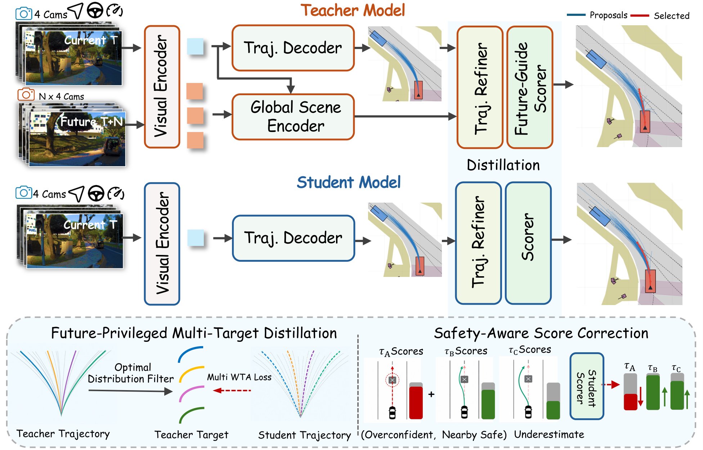

See FPD-Drive in action
Zero-shot closed-loop evaluation on HUGSIM
Press play to start the demo.
Overview
FPD-Drive transfers privileged future knowledge into a visual driving policy to improve both trajectory generation and selection. A teacher uses recorded future observations during training to provide diverse, high-quality trajectory targets. A student learns from these targets and from evaluated safety outcomes of its own candidates. At deployment, the student plans using four current camera views, available ego-state history, and a navigation command, without future observations or teacher inference.
A logged driving scene contains only one executed trajectory and its associated future observations, leaving other valid behaviors weakly supervised. FPD-Drive addresses this limitation with two complementary objectives:
- Future-Privileged Multi-Target Distillation expands supervision beyond a single demonstration by transferring multiple safe, geometrically distinct teacher trajectories.
- Safety-Aware Score Correction improves candidate selection by correcting overconfident unsafe predictions and increasing confidence in underestimated safe alternatives.
All scores are on a 0–100 scale; higher is better. FPD-Drive-Pro denotes the scaled model.
Framework
